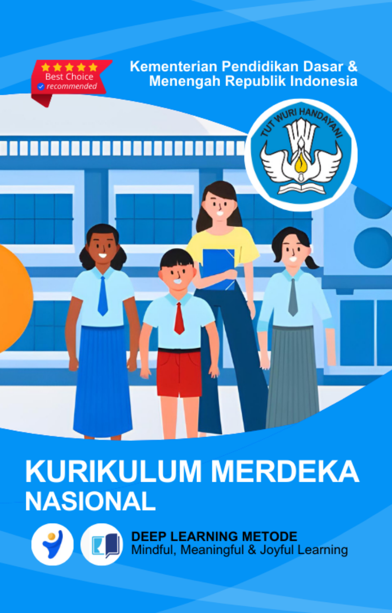
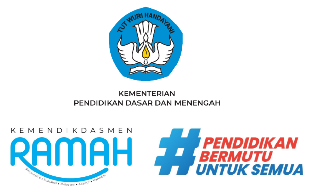
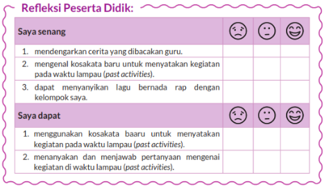
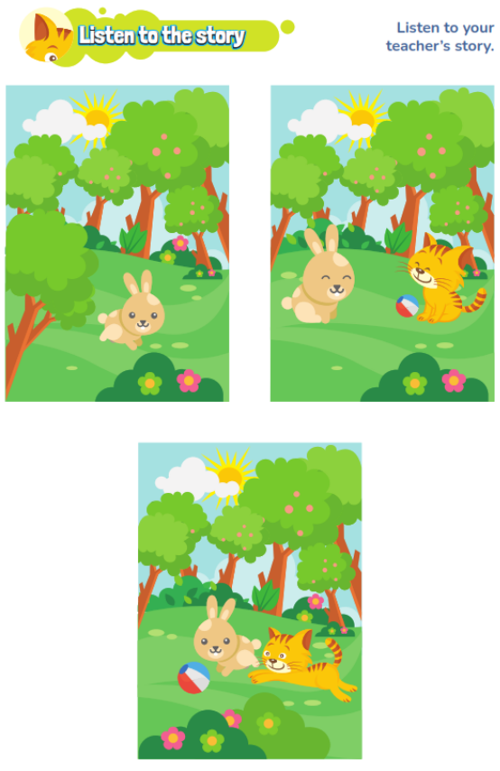
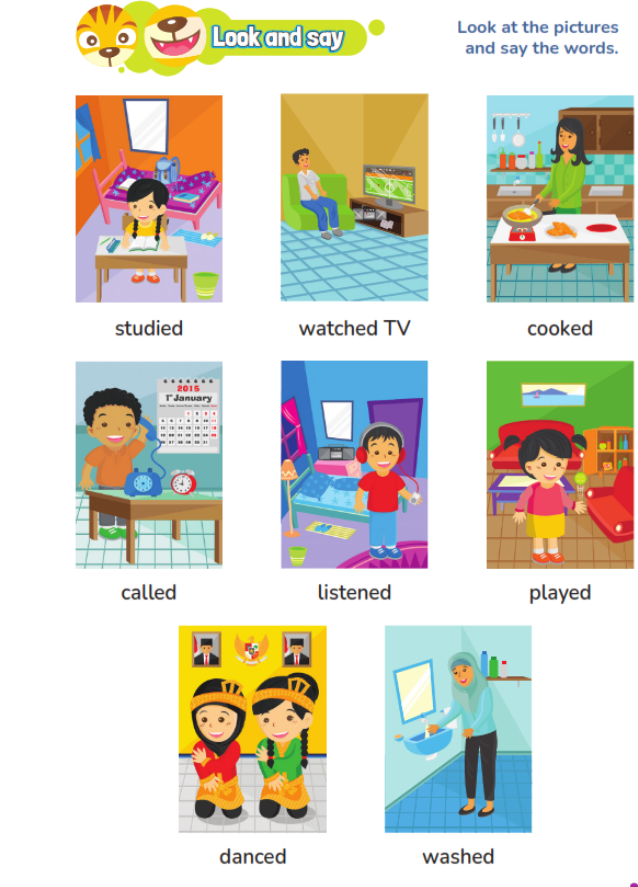
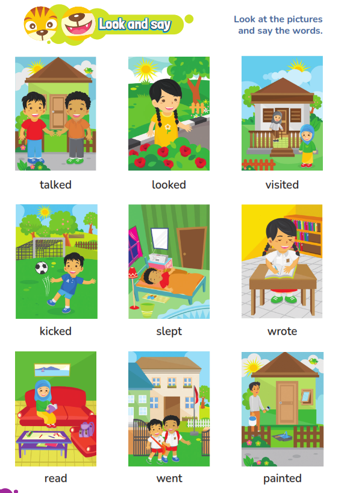

MODUL AJAR KURIKULUM MERDEKA |
Nama Penyusun : _____________________________ __ NIP : _______________________________ Nama Sekolah : _______________________________ Mata pelajaran : _____________________ __________ Fase, Kelas / Semester : _______________________________ Tahun Ajaran : _______________________________
|
INFORMASI UMUM
A. Identitas Modul
Nama Madrasah : .....................................................................................
Nama Penyusun : .....................................................................................
Mata Pelajaran : BAHASA INGGRIS
Fase / Kelas / Semester : B - VI / 1
Alokasi Waktu : .. JP x 35 Menit
Materi : Unit 1 : I studied last night, but my sister didn’t
Tahun Penyusunan : 20../20..
B capaian pembelajaran
Pada akhir Fase C, peserta didik memahami dan merespon teks lisan, tulisan, dan visual sederhana dalam bahasa Inggris. Mereka menggunakan bahasa Inggris sederhana untuk berinteraksi dan berkomunikasi dalam situasi yang familiar/lazim/ rutin. Peserta didik memahami hubungan bunyi huruf pada kosakata sederhana dalam bahasa Inggris dan menggunakan pemahaman tersebut untuk memahami dan memproduksi teks tulisan dan visual sederhana dalam bahasa Inggris dengan bantuan contoh.
C. Profil Pelajar Pancasila (PPP)
- Profil Pelajar Pancasila yang ingin dicapai adalah bertakwa kepada Tuhan Yang Maha Esa dan berakhlak mulia, bernalar kritis dan kreatif, bergotong royong, serta kebhinnekaan global.
D. 8 Profil LULUSAN
- Keimanan dan Ketakwaan terhadap tuhan YME
Individu yang memiliki keyakinan teguh akan keberadaan tuhan seta menghayati nilai-nilai spriritual dalam kehidupan sehari-hari
- Kewargaan
Individu yang memiliki rasa cinta tanah air, mentaati aturan dna norma social dalam kehidupan bermasyarakat, memiliki kepedulian, tanggungjawab social, serta berkomitmen untuk menyelesaikan masalah nyata yang terkait, keberlanjutan manusia dan lingkungan
- Penalaran Kritis
Individu yang mampu berpikir secara logis, analitis dan reflektif dalam memahami, mngevaluasi, serta memproses informasi untuk menyelesaikan masalah
- Kreativitas
Individu yang mampu berpikir secara inovatif, fleksibel, dan orisinal dalam mengolah ide atau informasi untuk menciptakan solusi yang unik dan bermanfaat
- Kolaborasi
Individu yang mampu bekerja sama secara efektif dengan orang lain secara gotong roying untuk mencapai tujuan Bersama melalui pembagian pesan dan tanggung jawab
- Kemandirian
Individu yang mampu bertanggung jawab atas proses dan hasil belajarnya sendiri dengan menunjukkan kemampuan untuk mengambil inisiatif, mngetasi hambatan, dan menyelesaikan tugas secara tepat bergantung pada orang lain
- Kesehatan
Individu yang memiliki fisik yang prima, bugar, sehat, dan mampu menjaga keseimbangan Kesehatan mental dan fisik untuk mewujudkan kesejahteraan lahir dan batin (well-being)
- Komunikasi
Individu yang memiliki kemampuan komunikasi untrapribadi untuk melakukan refleksi dan antarpribadi untuk menyampaikan ide, gagasan dan antarpribadi untuk menyampaikan ide gagasan, dan informasi baik lisan maupun tulisan serta berinteraksi secara efektif dalam berbagai situasi.
D. Sarana dan Prasarana
Media : LCD proyektor, komputer/laptop, jaringan internet, dan lain-lain
Sumber Belajar : LKPD, Buku Teks, laman E-learning, E-book, dan lain-lain
E. Target Peserta Didik
Peserta didik regular dari umur 11-12 tahun (tahap operasional konkret)
F. Model DAN METODE Pembelajaran
Pembelajaran dengan tatap muka menggunakan model pembelajaran kontekstual, PJBL, DEEP LEARNING (Mindful, Meanful, Joyful)
KOMPETENSI INTI
A. Tujuan Pembelajaran
- Peserta didik mampu menyimak cerita mengenai kegiatan di waktu lampau.
- Peserta didik mampu menjawab pertanyaan guru yang berhubungan dengan isi cerita.
- Peserta didik mampu melafalkan kata kerja lampau dengan benar.
- Peserta didik mampu membedaka kan penulisan kata kerja lampau dan kata kerja bentuk pertama.
- Peserta didik mampu menjodohkan gambar aktivitas dan kata kerja bentuk lampau dengan tepat.
- Peserta didik mampu mendengarkan instruksi guru dengan baik.
- Peserta didik mampu merespon instruksi guru dengan cara melingkari gambar sesuai dengan kalimat yang diucapkan guru.
- Peserta didik mampu mengisi kalimat rumpang dengan kata kerja bentuk lampau yang tepat sesuai gambar
- Peserta didik berkelompok mampu menyanyikan lagu dengan nada musik rap.
- Peserta didik mampu menyanyikan lagu bersama kelompok di depan kelas.
- Peserta didik mampu membuat pertanyaan dan jawaban dengan memainkan kartu bergambar secara berpasangan.
- Peserta didik mampu membuat kalimat pertanyaan dengan menggunakan kata kerja lampau.
- Peserta didik mampu menjawab pertanyaan temannya dengan menuliskan pada tabel.
- Peserta didik mampu bertanya jawab secara berpasangan.
- Peserta didik mampu membuat pertanyaan dengan menggunakan kata kerja bentuk lampau.
- Peserta didik melakukan tanya jawab dengan teman sekelas.
- Peserta didik mampu menuliskan hasil wawancara pada tabel.
B. Pemahaman Bermakna
Pada pembelajaran ini peserta didik mampu mengidentifikasi dan mengucapkan kata kerja bentuk lampau (past activity)
C. Pertanyaan Pemantik
- Peserta didik mampu menyimak cerita mengenai kegiatan di
- Peserta didik mampu menjawab pertanyaan guru yang berhubungan dengan isi cerita.
D. Kegiatan Pembelajaran
KEGIATAN PENDAHULUAN (Deep Learning Approach)
- Membangun Koneksi dan Motivasi
- Guru membuka pembelajaran dengan salam dan menanyakan kondisi peserta didik hari ini, menciptakan suasana pembelajaran yang penuh perhatian dan empati. Ini akan membangun kesadaran diri dan emosi yang positif sebelum memulai materi.
- Bertanya pemantik: "Apa yang kalian lakukan kemarin? Apakah ada yang merasa seperti belajar sesuatu yang baru? Mari kita pikirkan bersama!"
- Hubungkan dengan Profil Pelajar Pancasila: Gunakan contoh nyata, seperti bertanya tentang pengalaman peserta didik terkait nilai-nilai gotong royong, kebhinnekaan, atau berakhlak mulia, yang bisa dikaitkan dengan kegiatan sehari-hari dan pembelajaran bahasa.
- Pengaitan Materi dengan Kehidupan Nyata
- Asesmen Awal: Gunakan metode pengamatan diri (self-reflection) di mana peserta didik menulis atau berdiskusi tentang contoh kegiatan mereka kemarin, sesuai dengan kalimat "I studied last night, but my sister didn’t." Ini membantu peserta didik mulai berpikir tentang pengalaman pribadi mereka yang relevan dengan materi.
- Motivasi untuk Pembelajaran: Berikan gambaran manfaat langsung dari pembelajaran dalam kehidupan mereka, misalnya menghubungkan penggunaan waktu lampau dalam percakapan sehari-hari.
- Ice Breaking untuk Meningkatkan Keterlibatan
- Melakukan ice breaking dengan aktif melibatkan emosi dan pikiran peserta didik, misalnya dengan permainan singkat yang berhubungan dengan penggunaan kata kerja lampau atau membuat kegiatan yang memicu rasa ingin tahu.
- Penyampaian Tujuan Pembelajaran dengan Keterlibatan Emosional
- Guru mengaitkan tujuan pembelajaran dengan aspek sosial dan emosional, misalnya, "Mari kita belajar bagaimana berbicara tentang kegiatan kita kemarin, supaya kita bisa lebih percaya diri berbagi cerita dengan teman-teman dan orang tua."
KEGIATAN INTI (Deep Learning Approach)
- Listen to the Story (Mendalamkan Pemahaman dengan Cerita)
- Guru tidak hanya membacakan cerita, tetapi juga mengajak peserta didik untuk menyusun makna bersama berdasarkan gambar. Gunakan pertanyaan terbuka untuk menggali makna dari setiap bagian cerita, misalnya: "Apa yang bisa kita pelajari dari apa yang dilakukan Risti? Apa yang akan kamu lakukan jika berada di situ?"
- Libatkan emosi peserta didik dengan mendorong mereka untuk berempati terhadap karakter dalam cerita.
- Look and Say (Pengembangan Keterampilan Menyampaikan)
- Ajarkan kata kerja lampau dengan cara yang lebih mendalam: Misalnya, setelah menulis bentuk lampau, peserta didik diminta untuk berdiskusi dengan teman tentang pengalaman pribadi mereka yang terkait dengan kata kerja yang baru mereka pelajari.
- Lakukan Analisis Bersama: Tanya peserta didik, "Mengapa kata kerja diubah? Apa yang membedakan kegiatan sekarang dengan yang dulu?"
- Look and Match (Menghubungkan Pengalaman dengan Pembelajaran)
- Alih-alih hanya mencocokkan gambar dan kata, beri kesempatan peserta didik untuk menceritakan pengalaman mereka dengan kata kerja tersebut. Misalnya, setelah mencocokkan gambar dan kata, peserta didik bisa berbagi pengalaman dengan teman sekelas.
- Listen and Circle (Mendalami Konteks Visual)
- Dorong peserta didik untuk memahami konteks gambar lebih dalam, bukan hanya mendengarkan kalimat. Misalnya, tanyakan, "Kenapa gambar ini cocok dengan kalimat yang saya baca? Apa yang terjadi pada aktivitas ini?"
- Look and Write (Membentuk Keterampilan Menulis dengan Refleksi)
- Peserta didik tidak hanya menulis kalimat yang hilang, tetapi mereka juga diminta untuk merefleksikan pengalaman mereka sendiri melalui kegiatan tersebut dan menghubungkannya dengan kata kerja lampau.
- Let's Sing (Menciptakan Keterlibatan Emosional dengan Lagu)
- Lagu bukan hanya sekedar bernyanyi, tetapi juga sebagai media untuk ekspresi dan pengulangan konsep. Setiap peserta didik bisa menyampaikan perasaan mereka dengan cara mereka sendiri dalam lagu yang diciptakan.
- Let's Play (Pembelajaran yang Menyenangkan dan Partisipatif)
- Dalam permainan, tidak hanya sekedar bertanya dan menjawab. Ajak peserta didik untuk menyusun cerita atau berdiskusi tentang bagaimana aktivitas mereka bisa disusun menggunakan kata kerja lampau, dengan keterlibatan emosi dan pemikiran kritis.
- Let's Ask (Mendalami Konsep dengan Tanya Jawab)
- Lakukan kegiatan tanya jawab dengan lebih dari sekadar mengisi tabel. Ajak peserta didik untuk berpikir lebih dalam tentang kegiatan yang mereka lakukan kemarin dan bagaimana mereka bisa menceritakannya dengan cara yang menarik kepada teman-temannya.
PENUTUP (Deep Learning Approach)
- Refleksi Pembelajaran
- Ajak peserta didik untuk merenungkan apa yang telah mereka pelajari dan bagaimana itu bisa diaplikasikan dalam kehidupan mereka sehari-hari. Berikan ruang bagi mereka untuk berbicara tentang hal-hal yang mereka rasakan selama pembelajaran.
- Evaluasi Diri dan Teman
- Gunakan metode self-assessment dan peer-assessment untuk menilai pemahaman peserta didik. Ini tidak hanya soal hasil akhir, tetapi juga tentang bagaimana mereka merasa tentang proses pembelajaran yang telah dilakukan.
- Penutupan yang Memotivasi
- Akhiri dengan memberi tantangan kepada peserta didik untuk melanjutkan pembelajaran di luar kelas. Ajak mereka untuk berbagi cerita pribadi dengan orang terdekat menggunakan kata kerja lampau yang baru mereka pelajari.
E. Pembelajaran Diferensiasi
- Untuk siswa yang sudah memahami materi ini sesuai dengan tujuan pembelajaran dan mengeksplorasi topik ini lebih jauh, disarankan untuk membaca materi menganalisis tema night, but my sister didn’t dari berbagai referensi yang relevan.
- Guru dapat menggunakan alternatif metode dan media pembelajaran sesuai dengan kondisi masing-masing agar pelaksanaan pembelajaran menjadi lebih menyenangkan (joyfull learning) sehingga I studied last tujuan pembelajaran bisa tercapai.
- Untuk siswa yang kesulitan belajar topik ini, disarankan untuk belajar kembali pada pembelajaran di dalam dan atau di luar kelas sesuai kesepataan antara guru dengan siswa. Siswa juga disarankan untuk belajar kepada teman sebaya.
F. ASESMEN / PENILAIAN
1. Asesmen Diagnostik (Sebelum Pembelajaran)
Untuk mengetahui kesiapan siswa dalam memasuki pembelajaran, dengan pertanyaan:
No | Pertanyaan | Jawaban | |
Ya | Tidak | ||
1 | Apakah siap untuk belajar? |
|
|
2 | Apakah siap mengenal kosakata baru dalam bahasa inggris? |
|
|
3 | Apakah kalian sudah siap melaksanakan pembelajaran dengan berkelompok? |
|
|
2. Asesmen Formatif (Selama Proses Pembelajaran)
Asesmen formatif dilakukan oleh guru selama proses pembelajaran berlangsung, khususnya saat siswa melakukan kegiatan diskusi, presentasi dan refleksi tertulis.
1) Teknik Asesmen : Observasi, Unjuk Kerja
2) Bentuk Instrumen : Pedoman/lembar observasi
3. Asesmen Sumatif
a. Asesmen Pengetahuan
Teknik Asesmen:
• Tes : Tertulis
• Non Tes : Observasi
Bentuk Instrumen:
• Asesmen tidak tertulis : Daftar pertanyaan
• Asesmen tertulis : Jawaban singkat
b. Asesmen Keterampilan
• Teknik Asesmen : Kinerja
• Bentuk Instrumen : Lembar Kinerja
Asesmen formatif dilakukan oleh guru selama proses pembelajaran berlangsung, khususnya saat siswa melakukan kegiatan diskusi, presentasi dan refleksi tertulis.
G. PENGAYAAN DAN REMEDIAL
Pengayaan
- Peserta didik membaca kembali materi dalam Unit 1 dan mencari kata kerja lampau lainnya untuk diingat dan digunakan dalam berbicara ataupun menulis.
Remedial
- Peserta didik yang belum memahami materi dalam Unit 1 diberikan penjelasan tambahan terkait materi yang belum dipahami berikut latihan soal tambahan.
H. REFLEKSI GURU DAN PESERTA DIDIK
Refleksi Guru:
- Bagaimanakah reaksi peserta didik dalam mengikuti pembelajaran pada unit ini?
- Apa yang menjadi kendala dalam pembelajaran pada unit ini?
- Bagaimana pencapaian keberhasilan dalam pembelajaran unit ini?
- Poin penting apakah yang perlu menjadi catatan dalam menyelesaikan permasalahan pembelajaran pada unit ini?
- Tuliskan satu kata atau kalimat yang menggambarkan pencapaian pembelajaran pada unit ini.
Refleksi Peserta Didik:

LAMPIRAN- LAMPIRAN
Lampiran 1
LEMBAR KERJA PESERTA DIDIK (LKPD)
AKTIVITAS

Lampiran 2
BAHAN AJAR
 
Lampiran 3
DAFTAR PUSTAKA
EYLC Team. 2022. My Next Words Students Book 6. Jakarta: Kementerian Pendidikan, Kebudayaan, Riset, dan Teknologi
EYLC Team. 2022. Teachers Book My Next Words 6. Jakarta: Kementerian Pendidikan, Kebudayaan, Riset, dan Teknologi
Mengetahui, Kepala Madrasah
( ........................................... ) |
| ......................, ..............., 20 ..... Guru Mata Pelajaran
( ........................................... ) |